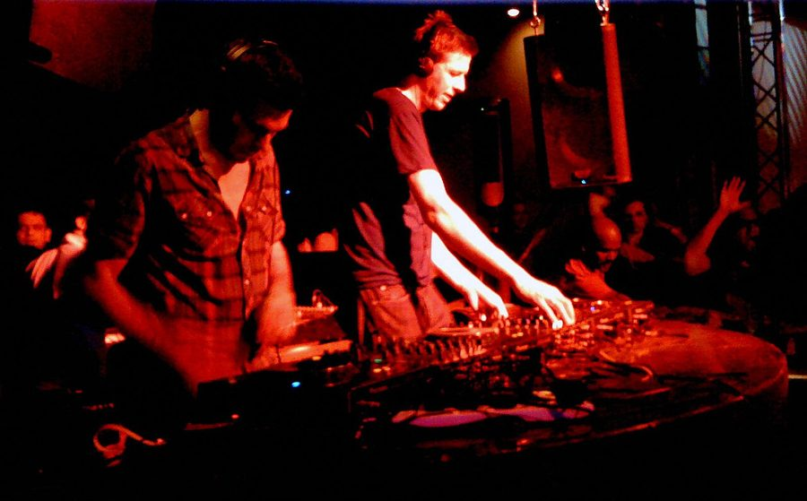

Groove Armada DJs to take over Chinese Laundry



Set aside Saturday march 31st in your calendar – one the world’s biggest and best dance act Groove Armada is set to take control of Sydney’s biggest little club. As an extra-special kick on for those also be seeing them playing live at the V Festival on the same day, Andy Cato and Tom Findlay are set to completely take over the club in a night that is guaranteed to be absolute mayhem.
Touring in advance of the release of their new album Soundboy Rock, the Groove Armada boys will be DJing separately across two rooms: in the first room we’ll have ‘Pack Up and Dance’ from Cato and in the second room Findlay will be delivering his own dynamic, funky sound with ‘Sugardaddy’. It’ll offer a rare insight into the individual styles and tastes of the boys behind the band, who have been responsible for some of the most well known dance tracks in recent times.
Groove Armada DJs will be hitting the Chinese Laundry Saturday March 31st, tickets are $40 + BF and you can buy them HERE.